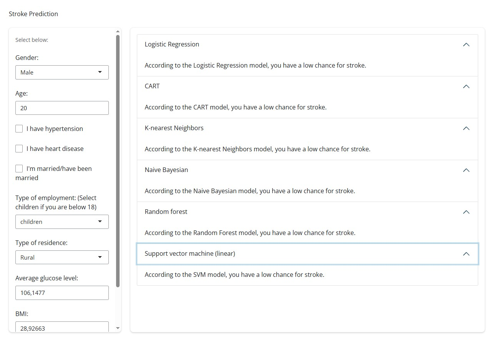

Projects

R: Stroke Prediction App
Created a stroke prediction app with R. Trained on 6 different machine learning models and trained on a dataset of 5110 patients, the app can predict the probability of a patient having a stroke based on their health data.
View More
R: Gene Network Analysis
Contributed to research with the Overton Group titled Predicting Cancer Vulnerabilities Using Gene Interaction Networks, in which a large dataset of multiple myeloma patients are analysed for potential gene targets for targeted therapies. The research was presented in ISMB 2024 Conference.

Teaching Materials: Ecosystem Card Game
Designed an educational card game to teach to the concept of ecosystem to Year 7 students.

Python: Organisation Tool
A Django app built for organisation and productivity: contains a clock with calendar, notes app, a to-do list, an addressbook app, and a gallery app. Built on Django 4.1.1 and uses MySQL database.
View More
Duke of Edinburgh Award
Coordinated the Duke of Edinburgh program at Sekolah Victory Plus in years 2024-2025 as an Award Coordinator and Award Leader, thus helping 15-16 year olds achieve their Bronze Award by supervising their sections and organising their Practice and Qualifying Journeys.